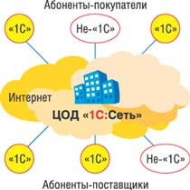
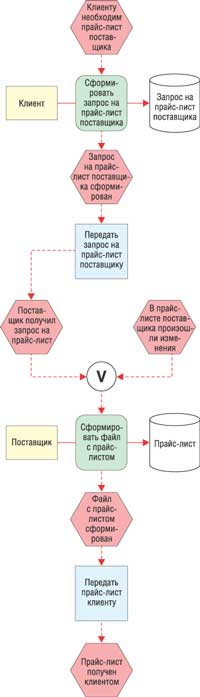
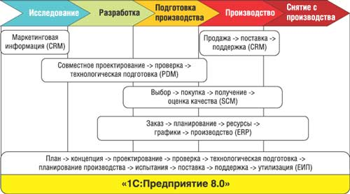
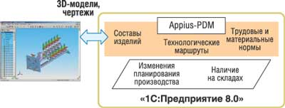
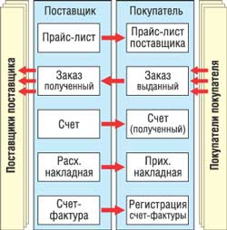

Продвижение технологий платформы "1С:Предприятие" в сторону средних и крупных заказчиков естественным образом повышает значимость проблемы интеграции ее прикладных решений между собой и с внешними приложениями. Ровно год назад мы рассматривали средства ее интеграции с внешними приложениями и источниками данных, реализованные непосредственно на уровне технологической платформы (см. "Средства и механизмы интеграции в составе "1С:Предприятие 8.0", "BYTE/Россия" № 6'2005). Однако по вполне понятным причинам эти базовые механизмы не могут решить всех возникающих задач объединения компонентов информационных систем, которые можно условно разделить на несколько категорий.
1. Объединение разных программных компонентов (конфигураций) в рамках одной платформы "1С:Предприятие". Эта задача хорошо знакома разработчикам и внедренцам прикладных решений "1С", для ее решения в рамках платформы имеются соответствующие средства. Тут есть много "подводных камней" и способов их обойти, но все же это внутренние проблемы платформы.
2. Интеграция приложений на одном компьютере (сервере или рабочей станции). Тут просматриваются два основных варианта: программное взаимодействие (COM и Automation Server) и обмен данными (файлами различных форматов).
3. Интеграция узлов распределенной, но все же единой системы. Из программных средств для этих целей сегодня, наверное, лучше всего использовать технологии Web-сервисов. А для информационного взаимодействия есть довольно много вариантов в зависимости от конкретных задач, во многом это определяется тем, имеем ли мы дело с однородной системой (на базе, например, только "1С:Предприятие 8.0") или неоднородной. Тут можно применять и обмен файлами (по электронной почте, через ftp-серверы), и механизмы обмена данными, реализованные в рамках платформы, и универсальные XML-средства (например, Microsoft BizTalk Server).
4. Взаимодействие разных систем (разных владельцев). Тут в принципе годятся все те же способы, что перечислены в предыдущем пункте. Однако в любом случае лучше выбрать асинхронные методы общения, по-видимому, с использованием технологий обмена сообщениями, реализованных на базе платформенного ПО. Но здесь нужно иметь в виду важный нюанс: технически реализовать вариант взаимодействия "точка-точка" довольно просто, а вот организационно - уже весьма сложно. В реальности это чаще всего удается сделать только через специализированных поставщиков услуг.
После такого вступления мы подробнее рассмотрим, какие новые интеграционные возможности предлагает фирма "1С" и как к этой проблеме подходят ее партнеры.
Электронный обмен данными через "1С:Сеть"
Передовым отрядом предприятий, осваивающих новые электронные технологии, в нашей стране довольно часто выступают торговые организации, для которых повышение эффективности управления товарными запасами - это фактически вопрос жизни и смерти бизнеса. В настоящее время в России (по крайней мере, в столице и крупных городах) фактически заканчивается формирование системы торговых сетей, которым нужно обеспечивать информационное взаимодействие как внутри себя (склады, торговые точки), так и с внешними контрагентами.
В этой связи эксперты прогнозируют в самое ближайшее время взрывообразный рост спроса на услуги электронного обмена бизнес-информацией на базе технологий EDI (Electronic Data Interchange) - передачи структурированных данных в виде стандартных сообщений между компьютерными приложениями по электронным каналам при минимальном участии человека. Как раз для решения этих задач предназначен новый сервис "1С:Сеть", реализованный на уровне прикладных решений "1С:Предприятие 8.0" и официально анонсированный фирмой "1С" в апреле 2006 г.
Сервис "1С:Сеть" реализует бизнес-логику взаимодействия сетевых операторов и поставщиков, разработанную Межрегиональной общественной организацией "Стандартизация обмена деловой информацией" (МОО СОДИ, http://www.moo-sodi.ru), которая объединяет ведущих российских сетевых операторов, производителей и поставщиков. Электронные документы, используемые при обмене, создаются в соответствии с XML-схемами формата CommerceML*, разработанными специально для организации электронного обмена данными в цепочке поставок в виде бизнес-процессов, принятых МОО СОДИ для взаимодействия поставщиков и сетевых операторов.
* Разработка российского формата CommerceML на базе стандартов XML была начата в 2000 г. усилиями фирмы "1С" при поддержке специалистов Microsoft. Позднее развитие этого проекта перешло под эгиду Комитета по электронной коммерции Некоммерческого партнерства "Стандарты электронного обмена информацией" (http://www.stp.ru). В конце февраля 2006 г. комитет утвердил новую редакцию стандарта CommerceML 2.0.
Нужно подчеркнуть, что используемые в "1С:Сеть" формат CommerceML и описания бизнес-процессов, вообще говоря, не полностью соответствуют международным стандартам. Это сделано вполне сознательно. По мнению разработчиков "1С", их подход учитывает реальные возможности организации EDI в нашей стране и неготовность быстро перейти на международные, более строгие, стандарты. Тем не менее "1С:Сеть" предусматривает возможность конвертировать данные CommerceML в другие XML-форматы обмена, принятые в иностранных компаниях, в том числе на базе международных стандартов GS1 XML и OASIS UBL.
Сам сервис "1С:Сеть" реализован в виде дополнительной конфигурации платформы "1С:Предприятие 8.0" (с использованием реализованного в ней механизма бизнес-процессов, см. "BYTE/Россия" № 3'2005), которая может подключаться к другим прикладным решениям. С апреля сервис уже включен в типовую поставку продукта "1С:Управление торговлей 8.0".
Пользователям торговых конфигураций системы программ "1С:Предприятие 7.7", желающим использовать сервис "1С:Сеть", бесплатно предоставляется специальный внешний компонент для функционирования сервиса.
В своем нынешнем виде сервис "1С:Сеть" ориентирован на обеспечение информационного взаимодействия между системами операторов розничных торговых сетей и поставщиков товаров для розницы. Сейчас он поддерживает четыре бизнес-процесса: "Обмен данными о товаре", "Обмен коммерческими предложениями", "Заказ товара" и "Поставка товара". Пользователи "1С:Сеть" получают возможность работать с несколькими торговыми партнерами из привычного интерфейса прикладных решений "1С" в режиме онлайн. При этом пользователям не надо загружать информацию из внешних файлов - она сразу отражается в соответствующих регистрах их торговой системы. В целом данный сервис предоставляет следующие возможности:
- обеспечивает преобразование данных, что облегчает подключение разнотипных информационных систем и устраняет необходимость синхронизации справочников вручную;
- сокращает расходы на организацию коммуникаций, поскольку использует общую инфраструктуру для обслуживания всех подключенных абонентов;
- предотвращает возникновение ошибок, проверяя документы на соответствие формата и содержания стандартам электронного обмена данными, а также на соответствие логике исполняемого бизнес-процесса;
- защищает пользователя от получения нежелательных документов, что свойственно электронной почте;
- сообщает менеджерам компаний-пользователей о наступлении контрольных событий;
- может использоваться в качестве независимого источника информации при решении споров в области обмена документами.
Организация информационного взаимодействия между контрагентами может выполняться путем передачи XML-файлов с электронными документами, выгруженными на внешний носитель информации или отправленными по электронной почте. Однако наиболее эффективный способ - использование Центра обработки данных "1С:Сеть" (рис. 1), разработчиком и провайдером которого выступает компания UnitSpace (http://www.unitspace.ru) при непосредственном участии "1С".
|  | Рис. 1. Так будет работать сервис "1С:Сеть".
|
Обслуживание в ЦОД платное (пропорционально количеству полученных или отправленных заказов), но первый месяц пользования его услугами абонент не оплачивает. Центр дает пользователям возможность получать дополнительные услуги, например, сервис контроля поставщиком складских остатков продавца (Vendor Managed Inventory, VMI) в реальном масштабе времени. Нужно подчеркнуть, что ЦОД может работать с клиентами, использующими и другие продукты, не только "1С", хотя в настоящий момент технические и организационные вопросы такого подключения еще не до конца проработаны.
Здесь мы приведем описание одного из бизнес-процессов, реализованного в сервисе "1С:Сеть". Бизнес-процесс "Обмен коммерческими предложениями" описывает взаимодействие торговой розничной сети (клиента) и поставщика при передаче поставщиком информации о цене предлагаемых товаров или услуг. Необходимое для бизнес-процесса условие - наличие контракта на поставку товаров (услуг) между поставщиком и клиентом (торговой организацией, которой выставляются счета на оплату товаров или услуг). Клиент может иметь несколько точек доставки - филиалов, адреса которых могут отличаться от юридического адреса клиента. Обычно точка доставки в рамках описываемого бизнес-процесса характеризуется переменной составляющей стоимости транспортных расходов. Процесс взаимодействия можно представить в виде диаграммы, как показано на рис. 2.
|  | Рис. 2. Описание бизнес-процесса "Обмен коммерческими предложениями".
|
Бизнес-процесс инициируется, если возникает необходимость изменить прайс-лист (либо создать новый). Прайс-лист содержит полный перечень коммерческих условий по товарам и услугам, поставляемым данным поставщиком данному клиенту. Для каждого клиента на один период действует только один прайс-лист. Поставщик формирует строки ценовых соглашений для соответствующих групп цен, в которых указываются следующие параметры: идентификатор товара; цена в указанной валюте за единицу товара; валюта; цена, включая налог; ставка налогов и сборов; начальная дата, с которой действует новая цена; конечная дата, по которую действует цена. Прайс-лист передается клиенту в электронном виде.
Интеграция этапов PLM
Современный этап применения ИТ характеризуется переходом от автоматизации отдельных этапов работы с теми или иными объектами к управлению всем их жизненным циклом (Lifecycle Management) - это относится к изделиям (product), приложениям (application), информации (information) и т. п. Причем решения, которые позиционируются поставщиками как LM-платформы, в первую очередь решают задачи интеграции инструментов, применяемых на разных этапах. Соответственно вопрос заключается только в том, что взять за интеграционную основу такой платформы, и тут существуют два основных подхода.
Первый подход - использовать в качестве базы инструмент одного из ключевых этапов (например, для ALM это может быть интегрированная среда разработки). Второй состоит в формировании некоторой качественно новой специализированной среды, изначально предназначенной для объединения различных "этапных" компонентов. Тут можно привести пример ERP-поставщиков, многие из которых, развивая свои традиционные продукты, приходят (или уже пришли) к необходимости создания таких интеграционных платформ (SAP NetWeaver, Галактика RaNet). Аналогичные примеры можно привести из области СУБД, средств разработки и т. д.
Обращаясь к проблематике управления жизненным циклом изделий, в несколько упрощенном виде ее можно описать формулой: PLM = PDM + ERP. Однако эти две составляющие сегодня не совсем равнозначны. Дело в том, что исторически PLM-системы выросли из круга задач PDM (Product Data Management), которые, в свою очередь, имеют "родителями" системы САПР (CAD) и управления документами (DM). Как следствие, предлагаемые сегодня PLM-платформы в большинстве своем базируются на применении CAD- или DM-технологий, а ERP-система рассматривается как некий дополнительный внешний компонент.
Однако вполне очевидно, что возможен и иной подход, когда за основу берется ERP-решение. Так, компания Appius (http://www.appius.ru) взяла за основу построения своей системы PLM-средств платформу "1С:Предприятие 8.0", используя ее и как средство разработки собственных прикладных решений, и как интеграционный слой (для связи с программами, реализованными в среде "1С:Предприятие", и внешними приложениями).
В жизненном цикле изделия можно выделить пять этапов, а также четыре контура управления реализуемыми в них бизнес-процессами (рис. 3):
- управление взаимодействием с заказчиком (потребителем) продукции (CRM);
- управление инженерными данными (PDM);
- управление взаимодействием с поставщиками (SCM);
- управление ресурсами компании в процессе производства продукции (ERP).
|  |
| Рис. 3. Управление жизненным циклом изделий на платформе "1С:Предприятие 8.0".
|
На рис. 3 видны значительные пересечения контуров бизнес-процессов друг с другом, поэтому автоматизация предприятия заключается не просто в оснащении подразделений программным продуктом, но и в обеспечении совместимости и целостности данных внутри предприятия.
По мнению специалистов Appius, создание прикладных решений на единой платформе "1С:Предприятие" помогает формировать некий общий "культурный слой", который включает как людей (программистов, аналитиков, пользователей), так и методологию разработки приложений. Это типовые структуры данных, алгоритмы, пользовательские интерфейсы. Опираясь на такой "слой", разработчик почти не затрачивает усилий на поиск необходимого решения, начиная от включения в проект нового специалиста и заканчивая созданием дополнительного модуля бизнес-приложения по типовой методологии.
Один из важнейших этапов производственного процесса - конструкторская и технологическая подготовка производства. От качества этой подготовки зависит весь последующий ход производства. Задачи конструкторской и технологической подготовки решаются с помощью специализированных систем - автоматизированного проектирования (CAD/CAM) и т. п. С другой стороны, система управления ресурсами "1С:Предприятие 8.0" ("Управление торговлей" или "Управление производственным предприятием") оперирует теми же данными, с которыми работают конструкторы и технологи, - информацией об изделиях, материалах и комплектующих, технологических маршрутах и производственных мощностях.
Для создания непрерывного конструкторско-производственного цикла нужно объединить ERP-систему и системы конструкторской и технологической подготовки в рамках единой информационной системы. Решение Appius-PDM (рис. 4) как раз и связывает специализированные производственные системы CAD/CAM с приложениями на базе "1С:Предприятие 8.0", позволяя включить конструкторско-технологические подразделения в единое информационное пространство на платформе "1С:Предприятие 8.0".
|  | Рис. 4. PDM + ERP на платформе "1С:Предприятие 8.0".
|
Кроме того, в систему ПО Appius, предназначенного для автоматизации конструкторско-технологической подготовки производства, входят следующие продукты.
Appius-Архив - система учета и контроля бумажных архивных документов в службе технического архива предприятия в соответствии с ГОСТ 2.501-88 "Правила учета и хранения".
Аppius-Верификатор - программный инструмент, предотвращающий попытки дублирования элементов номенклатуры. Он использует механизм бизнес-процессов "1С:Предприятие 8.0", через которые выполняется интеграция данных с ERP-решениями.
Appius-Конфигуратор - инструмент качественной и эффективной организации торговли товарами, которые могут поставляться с множеством опций и вариантов, в том числе и торговли технически сложным оборудованием. Основу этой системы составляют модели продукции, используемые в качестве шаблонов, которые определяют метод расчета и переменные: размер, цвет, материалы и т. д.
Инженерные справочники обеспечивают интеграцию с различными системами САПР (КОМПАС-3D, T-FLEX CAD 3D, SolidWorks, Autodesk Inventor и т. д.) и решениями на базе "1С:Предприятие 8.0".
В целом можно отметить следующие положительные стороны "платформенной" интеграции PDM- и ERP-решений (без учета финансовых факторов при покупке разных продуктов).
Во-первых, задача предприятия - не просто оснастить свои подразделения программным продуктом, но и обеспечить совместимость и целостность данных внутри предприятия. Системы Appius-PDM и "1С:УПП" используют единую платформу "1С:Предприятие 8.0", обеспечивая не только единый стандарт представления данных, но и единство самих данных PDM и ERP.
Во-вторых, не требуется интеграция бизнес-логики. Если используются PDM- и ERP-системы на разных платформах, бизнес-логика у каждого своя. Во всех PDM-системах этот механизм называется workflow, в "1С" - бизнес-процессы. Appius-PDM использует бизнес-процессы платформы "1С", что позволяет автоматизировать бизнес-процессы всех служб предприятия, работающих в среде "1С:Предприятие". Любой элемент системы Appius-PDM может участвовать в любом бизнес-процессе в среде "1С" (это реализовано, например, в модуле Appius-Верификатор).
В-третьих, открытость программного продукта Appius-PDM дает пользователю возможность самостоятельно настроить систему "под себя". Разработчики PDM-систем, как правило, не дают доступа к внутренней структуре данных и к исходному коду системы.
В-четвертых, в случае эксплуатации PDМ- и ERP-систем на разных платформах для их сопровождения потребуются два разных специалиста.
Еще одно преимущество - реализация технологии "западного" типа. Технологические САПР, давно присутствующие на российском рынке, разработаны как системы для автоматизации работы технолога, на выходе у которого - формирование комплекта технологической документации. Подготовка информации для планирования (экономическая составляющая) - это лишь побочный результат работы системы. Технология Appius-PDM реализована прежде всего для решения задач планирования, а формирование комплекта технологической документации - задача вторичная. Если говорить более абстрактно, то при первом подходе основное - разработать технологию для новой детали, при втором - запустить новую деталь в производство по уже имеющейся технологии. Второй подход - в чистом виде "западный", и реализовать его без "платформенной" интеграции практически невозможно.
Менеджер обмена данными "ПиБи"
Хотя в составе "1С:Предприятие 8.0" имеются встроенные механизмы обмена данными и поддержки распределенных баз данных, все же этих средств порой оказывается недостаточно для решения всего круга задач интеграции прикладных решений на этой платформе. Проблемы часто возникают, когда необходимо объединить различные по функциональности и структурам отраслевые решения на базе "1С:Предприятие", организовать взаимодействие различных версий платформы, а также работу с другими приложениями. Универсальный механизм обмена данными в составе "1С:Предприятие 8.0" обеспечивает информационное взаимодействие с решениями других поставщиков, но все же в качестве центрального узла должна использоваться платформа "1С" версии 8.0.
При работе на платформе "1С:Предприятие 7.7" можно использовать продукт "Менеджер обмена данными" компании "ПиБи" (http://www.pb.ru), который позволяет обмениваться данными между базами с разными структурами с помощью XML-форматов, фильтровать данные в зависимости от их содержания, применять произвольную топологию обмена, а также настраивать несколько сценариев обмена между базами.
Большая часть логики решения реализована на встроенном языке "1С:Предприятие", что позволяет при необходимости изменять ее с учетом конкретных задач, но для большинства сложных случаев обмена предусмотрены интерфейсы для реализации дополнительной логики, не затрагивая логики самого решения. По оценкам авторов решения, 90% задач обмена либо не требуют дополнительной настройки, либо настройка выполняется через пользовательский интерфейс с помощью мыши.
Отметим также, что в состав продукта входит отдельный модуль "Управление цепочками поставок", который может устанавливаться на любую (типовую или измененную) конфигурацию "Торговля и склад 8.5". Его основное назначение - автоматизация обмена деловой документацией (счетами, счетами-фактурами, приходными и расходными накладными), справочниками номенклатуры (прайс-листами), полученными и выданными заказами (два последних документа не содержатся в типовой конфигурации и созданы специально для настройки). На рис. 5 показана схема документооборота между Поставщиками и Покупателями, которые представляют собой N-е звено в гипотетической цепочке поставок (для других соседей по цепочке поставщик выступает покупателем, а покупатель - поставщиком).
|  | Рис. 5. Вариант применения модуля "Управление цепочками поставок".
|
Хотелось бы отдельно обратить внимание на один важный маркетинговый момент. Компания "ПиБи" очень удачно использовала "переходный период" (весьма длительный и еще далеко не закончившийся) миграции пользователей с версии платформы "1С" 7.7 на 8.0. В тот момент, когда сама "1С" полностью сосредоточила усилия на развитии "восьмерки" (и ее примеру последовали многие ее ведущие партнеры), "БиПи" сконцентрировалась как раз на пользователях 7.7, который и сегодня составляют подавляющую долю инсталлированной базы "1С:Предприятие" (более того, даже по объему новых инсталляций 7.7 опережала 8.0 по итогам 2005 г.!). Более того, компания совсем не спешит с выпуском своего решения для платформы 8.0, где ей пришлось бы столкнуться с конкуренцией со стороны "1С".
Но при этом "ПиБи" ловко использует "восьмерку" для маркетингового продвижения собственного продукта - его версия также обозначается порядковым номером 8.0. А появился он четыре года назад, когда "1С:Предприятие 8.0" была еще представлена бета-версией! Так что Интернет-баннер "Вышла версия 8.0!" имел бешеный успех - по нему кликали более 30% процентов посетителей Интернет-конференций по тематике "1С", попадая на описание продукта "Менеджер обмена данными", из которого авторы предусмотрительно убрали информацию о поддерживаемых версиях "1С:Предприятие".
Мобильность "1C:Предприятие 8.0"Для обмена данными между узлами информационной базы, находящимися на ноутбуках, в мобильном режиме, вне локальной сети предприятия в системе "1С:Предприятие 8.0" задействованы файлы обмена формата XML. В них хранятся только изменения в БД, выполненные с момента предыдущего сеанса копирования. Ранее такие файлы надо было вручную сохранять на диск, потом отправлять по электронной почте или выкладывать на ftp-сервер. Сейчас же все эти и многие другие операции автоматизированы с помощью выпущенного фирмой "1С" дополнительного модуля "Автономное решение", который легко встраивается в любые прикладные решения (конфигурации) системы "1С:Предприятие 8.0". Этот проект выполнен при технической поддержке российской группы по работе с разработчиками ПО корпорации Intel в рамках глобальной инициативы Mobilized Software Initiative. "Автономное решение" поддерживает несколько вариантов обмена - через съемные носители (флэш-карта, съемный диск), сетевые диски, Интернет-ресурсы (ftp) или по электронной почте. Благодаря тому, что объем передаваемой информации сведен к минимуму, при работе с Интернетом можно использовать каналы связи с низкой пропускной способностью (например, сотовую связь или dial-up соединение). Для удобства предусмотрено несколько вариантов настройки автоматического запуска процедуры обмена: например, по расписанию или в момент, когда пользователь вставит в разъем компьютера флэш-карту либо другой съемный носитель, в момент подключения к Интернету или к сети предприятия. Разумеется, в любой удобный момент можно запустить процедуру обмена вручную. Используемая в решении технология шифрования данных защищает передаваемую информацию от "прослушивания" при передаче по ненадежным сетям. Можно комбинировать разные способы обмена, оптимизируя сочетание объемов передаваемой информации и доступных каналов связи. Например, мобильные сотрудники будут получать основные объемы данных, находясь в офисе и подключая свои ноутбуки к локальной сети, а в течение рабочего дня они могут обмениваться небольшими порциями данных по каналам сотовой связи. Аналогичные возможности предоставляются сотрудникам предприятия, работающим дома, что существенно упрощает процедуру обмена данными между центральной информационной базой предприятия и узлами на домашних компьютерах сотрудников. Официальные пользователи продуктов "1С:Предприятие 8.0" могут получить "Автономное решение" бесплатно, в рамках информационно-технологического сопровождения (ИТС), начиная с апрельского выпуска диска ИТС, и объединить этот модуль с используемым приложением "1С:Предприятие" штатными средствами системы. Данный механизм уже имеется в очередном обновлении пакета "1С:Бухгалтерия 8.0" (начиная с версии 1.5.7 типовой конфигурации) и будет также включаться в программные продукты по мере выпуска их новых релизов.
|